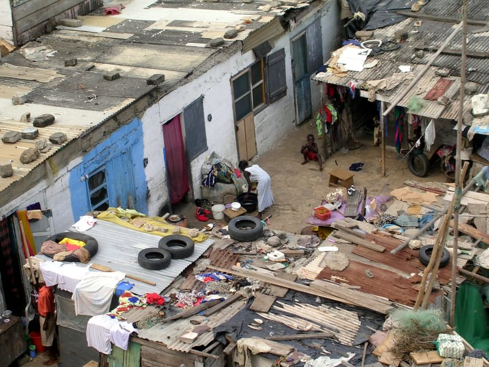

Clover has been born and raised in Edgeworth in poverty. while this heavily disavtanged state when it came to higher power, that never gave the idea of clover ever giving up on his dream into the big city just to make young people to never experience that life style again. as he vowed to givr back to his
